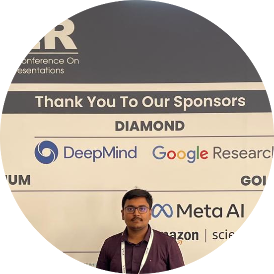
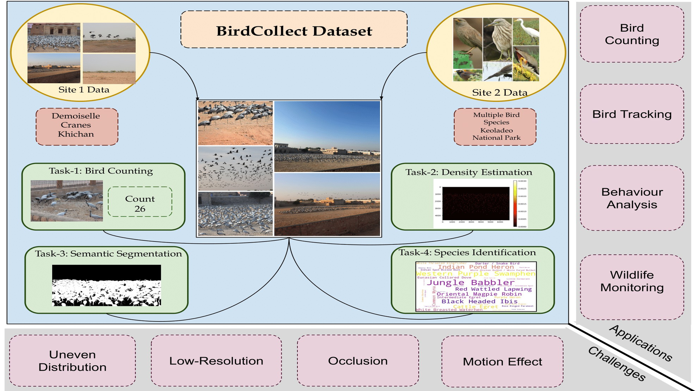
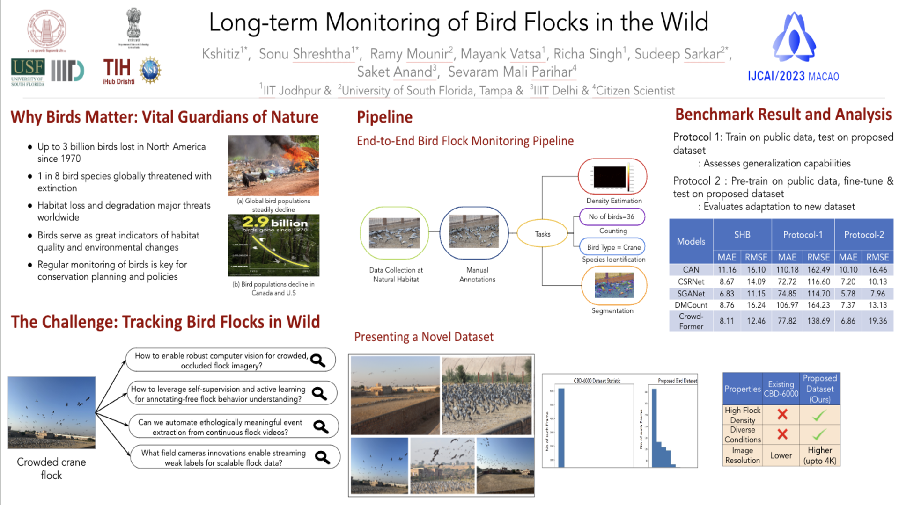
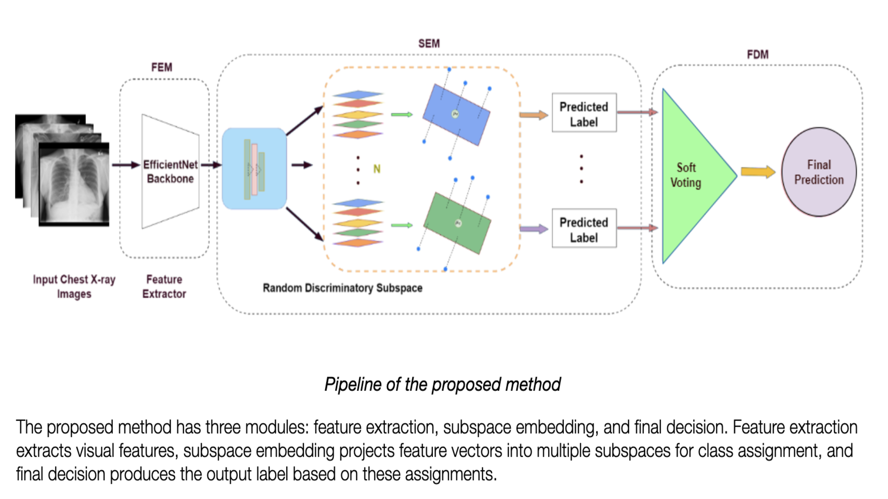

|
Kshitiz
I've graduated from the Department of Computer
Science and Enginering at the Indian Institute of Technology
Jodhpur, India. My primary interest lies in Machine Learning, Deep Learning, and its application
in
Computer Vision. Over the years,
I have worked on few-shot learning, meta-learning, object detection, segmentation, weakly supervised
learning, and brain-inspired work. More recently, I have been working on the application of generative
models
(as part of the Indo-US project) in the field of wildlife conservation.
Broadly, I am interested in using deep learning techniques to address complex challenges in AI for
Social
Good.
Updated (July 2023):
Currently working at Media.net (formerly Directi) on exciting
projects in the
adtech domain.
Email /
CV
/
Research
Statement /
Google Scholar
/
LinkedIn
|

|
|
Research
I am fortunate to work with Prof.
Richa Singh and Prof.
Mayank Vatsa as an undergraduate researcher at Image Analysis
and Biometrics Lab, IIT
Jodhpur. I have also worked closely with Prof.
Saket Anand (IIIT Delhi) and Prof. Sudeep Sarkar (USF,
Tampa). Over the past year, I have
actively engaged in various academic and industry internships, contributing first-author papers to
top-tier conferences and workshops including AAAI, IJCAI, and ICLR.
During my undergraduate studies, I have had the pleasure of working with Prof. Timothy Hospedales (Machine Intelligence Group,
University of Edinburgh ), Prof.
Yogesh Rawat (UCF) & Vaibhav Vineet (MSR,
Redmond),
Prof. Venkatesh Babu
(Vision & AI Lab, IISc Bangalore) and Dr.
Angshuman Paul (IIT Jodhpur). In the past, I have also collaborated with Prof. Ming-Hsuan
Yang (UC Merced), Maneesh
Singh (prev. at
Verisk Analytics) and SubbaReddy Oota
. I have interned at PrithviAI and iHub-Drishti (Department of Science and
Technology, India), working on an automatic number plate detection system and
ByteLearn (solving math problems with deep learning).
|
News
- Serving as a reviewer for ICLR Tiny
Papers 2024
- Invited to present our computer vision-based wildlife monitoring research at
IJCAI-SACAIR held in Johannesburg 2023
- Our paper titled Long-term Monitoring of Bird Flocks in the Wild has been
selected as part of IKDD
Premier paper
- Graduated with Department Rank 2 from Department of Computer Science and Engineering IIT Jodhpur!
- Awarded travel funding from Microsoft Research to attend IJCAI
2023
- Awarded travel funding from Imperial College London to attend
ICLR 2023
- Served as a teaching assistant in Deep Learning course (Jan'23 - May'23) for both graduate and
post-graduate students
- Selected as an in-person summer intern at Australian
National University 2022
- Selected as Core Member, Robotics Society.
- Among the top 0.7% of 1.3 million candidates in the Joint Entrance Examination (JEE) Advanced 2019
|
|
Publications
|
|

|
BirdCollect: A Comprehensive Benchmark for Analyzing Dense Bird Flock Attributes
Kshitiz, Sonu Shreshtha, Muskan Dosi, Bikash
Dutta, Mayank Vatsa, Richa Singh, Saket Anand, Sudeep Sarkar, Sevaram Mali Parihar
AAAI, 2024
|
|

|
Long-term Monitoring of Bird Flocks in the Wild
Kshitiz, Sonu Shreshtha, Ramy Mounir, Mayank
Vatsa, Richa Singh, Saket Anand, Sudeep Sarkar, Sevaram Mali Parihar
IJCAI, 2023
|
|

|
Few-shot Diagnosis of Chest X-Rays Using an Ensemble of Random Discriminative Subspaces
Kshitiz, Garvit Garg, Angshuman Paul
ICLR MLGH Workshop, 2023
|
|
Academic Service
-
Reviewer:
-
Teaching Assistant:
-
Volunteer:
|
|